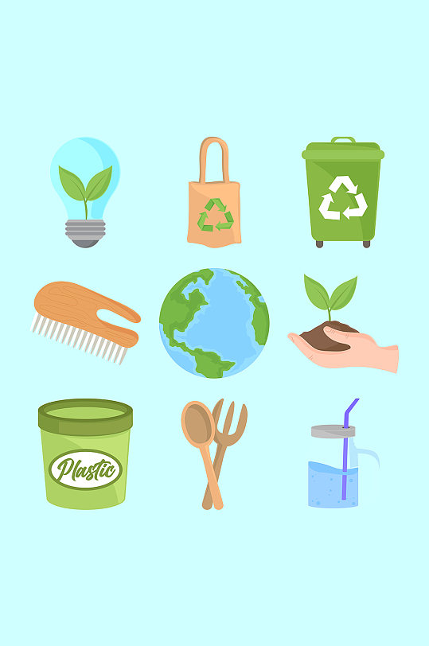
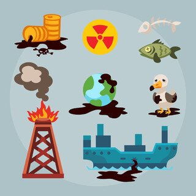
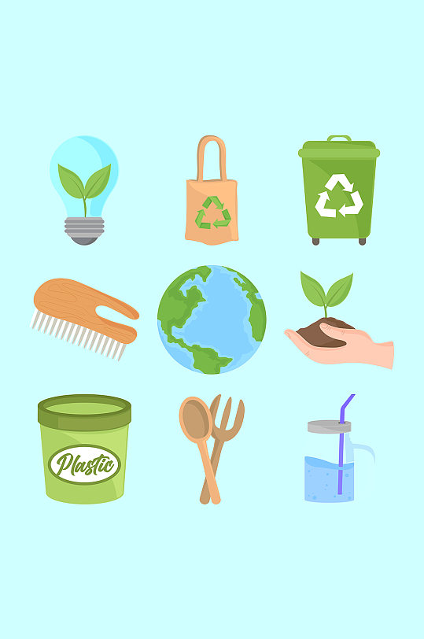
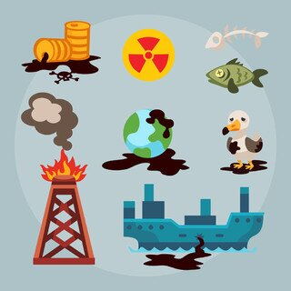
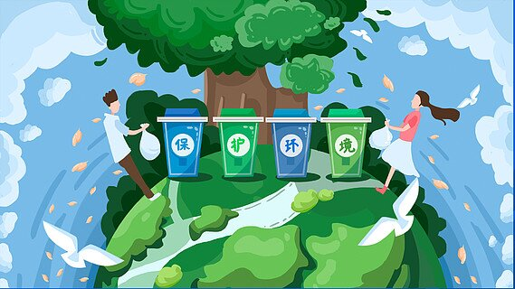

1.良好的的空气质量可以降低呼吸道疾病的发生风险;
2.水源保护:优质的饮用水对于维持身体健康、促进新陈代谢等意义重大;
3.食品安全:环保工作能减少土壤污染和水污染,进而保障农作物生长的环境,有利于生产处安全健康的食品;
4.减少疾病传播:合理的环境管理可以减少蚊虫滋生,降低传染病的传播几率;
5.心理健康:美丽的心情给健康生活带去积极影响;
6.减少有害物暴露:通过环保努力降低环境中的有害物质,可以减少人们接触这些物质带来的健康危害等健康生活与环保的关系。
环保,一个我们经常挂在嘴边的话题,却往往被无视。然而,环保的重要性不容易被忽视。环保更是为了保护我们人类自己。环境污染、资源误解等环境问题,已经严重威胁到我们的生存和发展,
只有通过环保才能保护我们美丽的地球村,才能保证我们家园以后的可持续发展。
.jpg) 



首先,我们要从个人做起,采取环保行动。我们可以使用一次性塑料制品，选择可降解的环保产品;我们可以节约用水、用电,减少能源消耗;选择交通工具或步行、骑行等方式出行。
其次，我们在家庭中也可以做出实践。家庭是社会的细胞,家庭环保是社会环保的基础。我们可以通过垃圾分类、节约用水用电、减少使用化学清洁剂等方式，来减少家庭对环境的影响。我们还可以通过教育家庭成员，从小养成环保意识，成为环保的小小行动者。
此外，我们还可以参与社区的环保活动。一起植树造林、清理垃圾、保护宣传等。通过社区活动来提高自己的环保意识,也带动更多的人参与到环保中来。
同时,企业也应当承担环保责任。企业采用环保技术、开展绿色生产等,企业承担起环保责任，可以实现可持续发展。
最后,政府应该制定和实施环保政策,更加来维持环保的发展,加大对环保违法行为的处罚力度。支持环保技术的研究和应用,推动环保产业的发展。

环保的利:随着去工业化和城市化的快速发展,空气污染问题日益严重。通过推广情节能源、减少污染物的发展、减少排放等措施,可以有效改善空气质量,减少对人体健康危害。 水是生命之源,加强水处理,环保水资源,保障人类和动植物的生存需求。 环保靠大家,让我们环保起来,拥有更好的环境。
.jpg)
环保的弊:首先,环保的经济成本是一个重要的问题。环保措施往往需要投入大量的人力、物力和财力,对于发展中国家是一个很大的负担。 其次,技术有限制,许多环保技术不够成熟,影响环保效果。 最后,社会意识与行为也是一个重要的问题,我们需要有环保意识,采取环保行为。